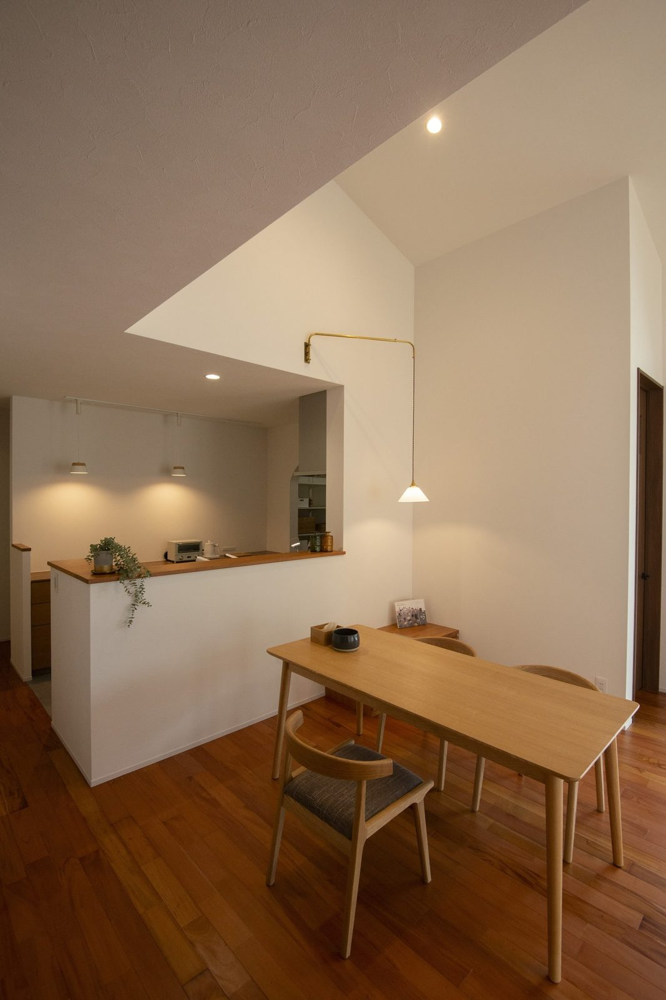
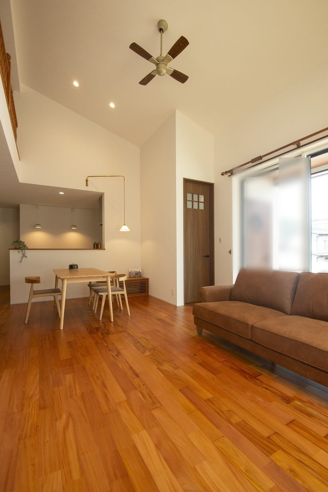

帰宅してからの場面を考える
奈良で家を建てるなら、昼間の明るさと一緒に、帰宅してからの過ごし方も考えておきたいですね。大阪や京都での仕事を終えて帰る日は、家で過ごす時間の多くが日没後になる方もいると思います。照明は、器具の形を選ぶ前に「どこで何をするか」を整理してみましょう。
食卓と台所は、別々に考える
写真では、食卓の上に吊り下げ照明があり、台所側にも別の明かりがあります。食事をする人と片付けをする人で、照らしたい場所は違います。食卓を動かす予定があるなら、器具の位置を先に固定して困らないかも確認しましょう。

くつろぐ場所から器具を見る
こちらの写真では、天井の照明と食卓の照明を一緒に見ることができます。ただ、写真だけで夜のまぶしさや明るさは判断できません。見学ではソファに座り、光源が直接目に入りすぎないか、手元で本を読むなら何を足すかを確かめたいところです。

全部を一度に点ける必要はある？
夕食、片付け、テレビを見る時間。それぞれで使う明かりを図面に色分けすると、スイッチの分け方を相談しやすくなります。家族がまだ片付けているのに、居間から全部消してしまう。そんな場面がないか、普段の夜を順番にたどってみてください。
寝る前に通る道も確認
玄関から居間へ、居間から洗面へ、そこから寝室へ。夜に通る道で、どこから点けて、どこで消すかを確認します。自動で点く照明を選ぶ場合も、検知する範囲や点灯時間は製品ごとに確認が必要です。器具の交換方法と、掃除のために手が届くかも忘れずに。
打合せには夜の暮らしをメモする
「明るい家がいい」だけでなく、帰宅時刻、食事の場所、寝る前にすることを書いてみましょう。奈良での新居にも持っていきたい習慣が見えてきます。図面と一緒に話せると、必要な明かりを絞り込みやすくなります。
よくある質問
照明は間取りが決まってからでいい？
器具の最終選定は後でも、家具の配置やスイッチの位置は間取りと一緒に相談しましょう。配線を決める前に、夜の動きを共有すると確認が進みます。
関連記事：奈良で平屋を建てる

奈良の工務店シバサンホームで、
土地さがし・資金計画・打合せの窓口をしています。
モットーはスピード・誠実さ・楽しさ。